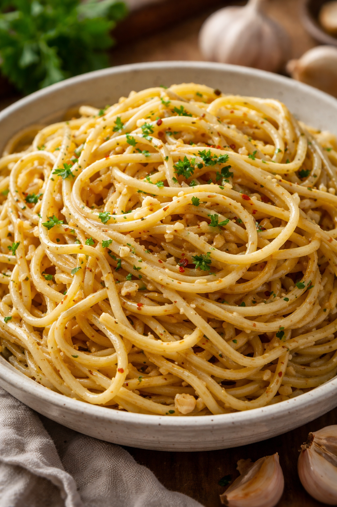

Garlic Noodles
Home

A warm, comforting bowl of noodles full of bold, savory flavor. Smooth,
garlicky, and perfectly satisfying, it’s the kind of dish that makes every
bite feel indulgent yet wholesome.
Ingredients
- 8 oz pasta of choice
- 1 small head garlic, minced or sliced
- ½ bunch green onions, sliced
- ½ cup canned coconut milk
- 3 tbsp reduced sodium tamari or soy sauce
- 1 tsp hoisin sauce, optional
Instructions
-
Bring a large pot of water to a boil and cook the pasta until al dente.
Drain and set it aside in the pot while you prepare the rest of the
dish.
-
Finely chop the garlic and green onions, keeping the green tops separate
from the white sections.
-
Heat a large skillet over medium-high heat for about a minute. Add the
garlic along with a small splash of water and stir. If the garlic starts
to stick, add a little more water. Cook until it becomes very fragrant,
about 1–2 minutes. Then add the white parts of the green onion, sautéing
for 3 minutes and adding water as needed to prevent sticking.
-
Pour in the coconut milk and tamari (or soy sauce), stirring to combine
and heat through for one minute. Mix in the green onion tops, then add
the pasta and toss thoroughly until evenly coated.
-
Plate the noodles while hot. Top with Parmesan, chili flakes, or extra
green onions if desired.